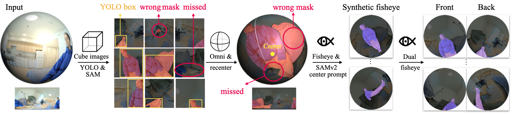

Radiance fields have emerged as powerful tools for 3D scene reconstruction. However, casual capture remains challenging due to the narrow field of view of perspective cameras, which limits viewpoint coverage and feature correspondences necessary for reliable camera calibration and reconstruction. While commercially available 360° cameras offer significantly broader coverage than perspective cameras for the same capture effort, existing 360° reconstruction methods require special capture protocols and pre-processing steps that undermine the promise of radiance fields: effortless workflows to capture and reconstruct 3D scenes. We propose a practical pipeline for reconstructing 3D scenes directly from raw 360° camera captures. Our pipeline requires no special capture protocols or pre-processing, and exhibits robustness to a prevalent source of reconstruction errors: the human operator that is visible in all 360° imagery. To facilitate evaluation, we introduce a multi-tiered dataset of scenes captured as raw dual-fisheye images, establishing a benchmark for robust casual 360° reconstruction. Our method significantly outperforms not only vanilla 3DGS for 360° cameras but also robust perspective baselines when perspective cameras are simulated from the same capture, demonstrating the advantages of 360° capture for casual reconstruction.
A common approach for 3D-reconstructible scene capture is to record a short handheld iPhone video, split it into frames, and feed them to a reconstruction model. This is appealing because it works casually, without special instructions or careful setup during capture, making it easy to scale to many scenes. The catch is that a phone camera has a limited field of view. What feels like a full sweep of the scene often still leaves large parts unseen, which can lead to holes and artifacts in the final reconstruction.
A natural idea, then, is to increase the field of view to 360°, and use commercially available dual-fisheye cameras along with methods like 3DGRT for 360° reconstruction. But how much does that actually help in a controlled setting?
We benchmark the effect of replacing a perspective camera with a 360° camera under the same fixed training and test trajectories. The benefits appear at two levels: better camera calibration and better reconstruction.
We first use the 360° images for camera calibration in COLMAP, then undistort them into perspective images for reconstruction. We use reconstruction quality here as a proxy for better camera calibration. The result still has holes, because reconstruction is performed from undistorted perspective images, but notice how the floater artifacts in the middle of the scene disappear thanks to the improved camera calibration.
We then use 360° imagery for both calibration and reconstruction by training directly on the raw dual-fisheye images. This preserves the calibration benefits while also keeping the full scene coverage, and you can see how the added coverage removes the holes in the reconstruction much more effectively.
Below is a comparison of all three setups side by side, and the fixed controlled train trajectory (purple) and test trajectory (yellow) shared across them:
Notice how the reconstruction from 360° imagery is the most robust to out-of-distribution test views that lie far from the capture trajectory.
A common option is to stitch the two fisheye views into a single omnidirectional image and use that for training. However, stitching introduces visible artifacts, and using stitched images as supervision can degrade reconstruction quality. This is why we instead work directly with the raw dual-fisheye frames.
A 360° camera captures the full scene, but it also captures the camera operator in every frame. The operator shifts, moves their hand around, and changes during the capture. As a result, if we naively train on raw dual-fisheye captures, the operator can appear as artifacts in the final rendering, degrading the quality.
Unlike ordinary transient effects that can often be filtered out by robust reconstruction methods that track rendering error residuals, the operator is usually not transient enough to be detected by these methods reliably: during capture, people often remain still for long periods while only moving their arms or the camera slightly. We show that SpotLessSplats (SLS) struggles in one such scene.
We design a pipeline that utilizes general-purpose vision foundation models to reliably segment the camera operator in highly distorted 360° dual-fisheye images, without extra training, fine-tuning, or manual prompts.

An alternative masking strategy is to use a fine-tuned SAM-based model for omnidirectional images, such as OmniSAM, and prompt it with a "person" text label. However, these methods are often less robust in highly distorted regions, which can leave residual operator pixels that later appear as reconstruction artifacts.
In contrast, our method masks the operator reliably even in heavily distorted regions, producing much cleaner masks and preventing these residual pixels from appearing as artifacts in the final reconstruction.
Our method produces clean, high-fidelity reconstructions without visible distractor artifacts, outperforming baseline methods. Below, we show comparisons with SLS as a robust 3DGS reconstruction method on both perspective images and dual-fisheye frames, as well as vanilla 3DGRT.
More qualitative results are available here.
@article{foroutan2026fullcircle,
title = {FullCircle: Effortless 3D Reconstruction from Casual 360° Captures},
author = {Foroutan, Yalda and Oztas, Ipek and Rebain, Daniel and Dundar, Aysegul and Yi, Kwang Moo and Goli, Lily and Tagliasacchi, Andrea},
journal = {arXiv preprint arXiv:2603.22572},
year = {2026}
}